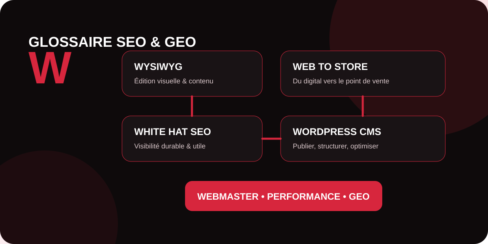

La lettre W réunit des concepts très différents mais complémentaires. Certains concernent la création et l’administration d’un site, comme WYSIWYG, webmaster et WordPress ; d’autres décrivent une stratégie d’acquisition, comme le white hat SEO, ou la connexion entre visibilité numérique et point de vente physique avec le web to store. Ce guide vous aide à comprendre leur rôle et leurs implications SEO et GEO.

WYSIWYG
WYSIWYG signifie What You See Is What You Get, soit « ce que vous voyez est ce que vous obtenez ». Un éditeur WYSIWYG permet de créer et mettre en forme une page à travers une interface visuelle, sans avoir à écrire directement tout le code HTML ou CSS. L’utilisateur voit donc, pendant l’édition, un rendu proche du résultat final.
Ces éditeurs ont démocratisé la publication web : titres, paragraphes, images, boutons et colonnes peuvent être manipulés visuellement. Les éditeurs modernes à blocs, tels que ceux proposés par de nombreux CMS, reprennent cette logique tout en offrant davantage de structure.
Quel impact sur le SEO ?
Un outil visuel n’est ni bon ni mauvais pour le référencement par nature. La qualité dépend du code généré et de la façon dont le contenu est structuré : hiérarchie des titres, textes alternatifs, liens explorables, performance, accessibilité et compatibilité mobile. Une interface facile à utiliser ne dispense donc pas d’un contrôle SEO technique.
web to store
Le web to store désigne les stratégies qui utilisent les canaux numériques pour conduire un internaute vers un magasin ou un point de vente physique. Le parcours peut commencer par une recherche Google, une fiche établissement, une publicité locale, un comparateur, les réseaux sociaux ou le site de la marque, puis se terminer par une visite en boutique.
Parmi les dispositifs fréquents figurent le click and collect, la consultation du stock local, la prise de rendez-vous, l’itinéraire vers un magasin, la réservation en ligne ou encore les offres géolocalisées. L’objectif est de supprimer les frictions entre recherche numérique et action locale.
Pourquoi le SEO local est-il central ?
Une stratégie web to store efficace suppose des informations locales cohérentes : nom de l’établissement, adresse, horaires, téléphone, pages magasins et informations utiles avant la visite. Le contenu doit répondre aux intentions locales et faciliter le passage de la recherche à l’action. Dans une approche GEO, des données claires et cohérentes aident également les systèmes d’IA à mieux comprendre les entités, leurs implantations et leurs services.
white hat seo
Le white hat SEO regroupe les pratiques de référencement qui cherchent à améliorer durablement la visibilité d’un site en privilégiant la qualité, l’utilité pour l’utilisateur et le respect des recommandations des moteurs de recherche. L’expression est généralement opposée au black hat SEO, qui repose sur des techniques manipulatrices ou contraires aux politiques des moteurs.
Une démarche white hat peut inclure l’amélioration technique du site, la création de contenus utiles et originaux, une architecture claire, un maillage interne pertinent, une bonne expérience mobile, des données structurées appropriées et l’acquisition de notoriété grâce à des contenus réellement dignes d’être cités.
White hat ne signifie pas « SEO passif »
Respecter les règles n’empêche pas d’être ambitieux. Une stratégie peut analyser la concurrence, travailler les intentions de recherche, optimiser les pages, développer des contenus experts et promouvoir activement une marque. La différence tient surtout à l’absence de techniques destinées à tromper les utilisateurs ou à manipuler artificiellement les systèmes de classement.
webmaster
Le webmaster est la personne chargée, totalement ou partiellement, de l’administration et du bon fonctionnement d’un site web. Selon la taille de l’organisation, son rôle peut couvrir la mise à jour des contenus, l’intégration de pages, la maintenance technique, la sécurité, les sauvegardes, le suivi des erreurs et la coordination avec les équipes SEO, développement ou marketing.
Le métier s’est fortement spécialisé. Dans une petite structure, une seule personne peut encore gérer de nombreuses missions ; dans une organisation plus importante, celles-ci sont réparties entre développeurs, administrateurs système, experts analytics, responsables éditoriaux, UX designers et consultants SEO.
Webmaster et référencement
Le webmaster joue souvent un rôle déterminant dans la mise en œuvre des recommandations SEO : accessibilité des ressources, redirections, balises, sitemap, robots.txt, performance, données structurées et corrections d’erreurs. Il facilite ainsi l’exploration et la compréhension du site par les moteurs tout en garantissant une expérience correcte aux visiteurs.
WordPress CMS
WordPress CMS désigne WordPress utilisé comme système de gestion de contenu (Content Management System). Cette plateforme open source permet de créer, publier et administrer des sites sans devoir développer chaque fonctionnalité depuis zéro. Elle s’appuie notamment sur des thèmes, un éditeur à blocs et un vaste écosystème d’extensions.
WordPress peut servir à construire un blog, un site vitrine, un média, un catalogue, un espace institutionnel ou une boutique lorsqu’il est complété par les fonctionnalités adaptées. Sa flexibilité explique son utilisation par des profils très différents, des petites entreprises aux grandes organisations.
WordPress est-il automatiquement optimisé pour le SEO ?
Non. Un CMS facilite certaines opérations, mais la performance SEO dépend toujours de la configuration et du contenu : qualité du thème, structure des URL, vitesse, indexation, architecture, maillage interne, contenus, médias, extensions et maintenance. Un empilement de plugins ou un thème lourd peut dégrader les performances.
Pour le SEO et le GEO, WordPress constitue donc une base de travail, pas une garantie de visibilité. Les contenus doivent rester compréhensibles, fiables, bien structurés et accessibles aux moteurs comme aux utilisateurs.
Tableau de synthèse : les notions en W
| Terme | Définition courte | Enjeu SEO / digital |
|---|---|---|
| WYSIWYG | Édition visuelle d’un contenu proche de son rendu final. | Facilite la publication, mais nécessite un contrôle de la structure et du code généré. |
| Web to store | Parcours numérique destiné à générer une visite en point de vente. | Mobilise SEO local, données d’établissement et expérience omnicanale. |
| White hat SEO | Optimisation durable conforme aux bonnes pratiques des moteurs. | Réduit le risque lié aux tactiques manipulatrices et privilégie la valeur utilisateur. |
| Webmaster | Professionnel chargé de l’administration et du fonctionnement d’un site. | Met en œuvre de nombreux éléments techniques indispensables au référencement. |
| WordPress CMS | Plateforme open source de création et de gestion de contenus web. | Base flexible dont les performances SEO dépendent de la configuration et de la qualité du site. |
Construisez un site visible, fiable et performant
MinoSeo accompagne les entreprises sur le SEO, le GEO, le contenu et la popularité afin de transformer leur site en véritable levier d’acquisition et de visibilité.
Demander un audit gratuit